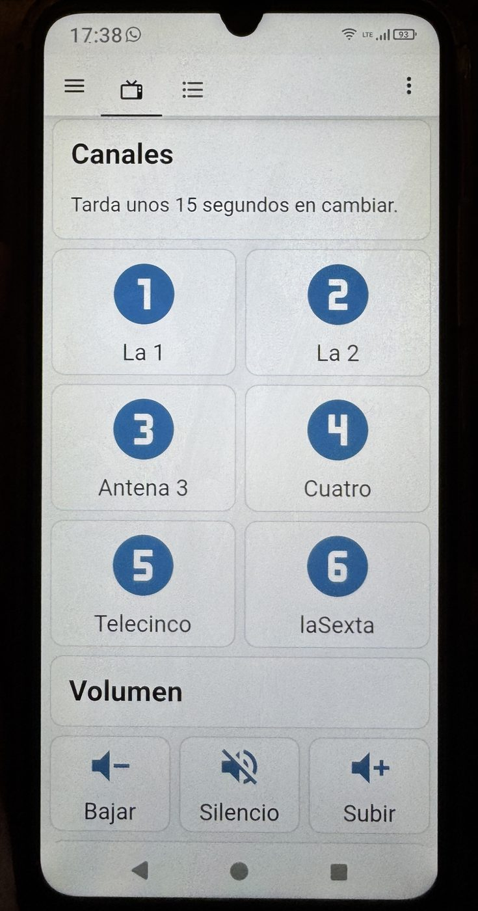

Tele Fácil · proyecto
Solo quiere ver la tele
Un mando de cuarenta botones, un decodificador que ignora los números y una persona mayor que solo quiere poner Telecinco. Esto es lo que costó reducirlo a seis botones grandes.
La escena es más común de lo que parece. Alguien lleva sesenta años viendo la televisión, y de pronto ya no sabe encenderla. No porque haya perdido facultades: porque cambiaron el aparato. Donde antes había una rueda y dos botones, ahora hay un decodificador con menú, una aplicación que se actualiza sola, una rejilla de canales que se navega con flechas y un mando con cuarenta teclas, de las cuales importan cuatro.
Lo que pasa a continuación siempre es lo mismo. Un día se pulsa algo sin querer, la pantalla se va a un sitio desconocido y no hay forma de volver. A partir de ahí se deja de tocar el mando. Se ve lo que haya puesto. Y para cambiar de canal se espera a que venga alguien.
El problema no es que no entienda la tecnología. Es que la tecnología no entiende para qué la quiere.
Cambiar de canal no es una tarea que requiera aprender un sistema. Es un gesto. Y un gesto que ha dejado de funcionar es una autonomía que se pierde: pequeña, cotidiana y bastante humillante de tener que pedir.
Lo que se ve al final
La solución no tiene menús, ni ajustes, ni pantalla de inicio. Es esto: seis canales, tres botones de volumen. Un botón hace una cosa. Siempre la misma.
Cuarenta teclas. Cuatro se usan. Ninguna dice qué hace en el idioma de quien la pulsa.

La pantalla real. Seis canales, tres botones de volumen y una frase que avisa de la espera. No hay nada más: ni ajustes, ni menú, ni pantalla de inicio.
Tarda unos 15 segundos en cambiar.
La espera va acelerada: en casa son entre 12 y 18 segundos, y el panel lo dice antes de que nadie se impaciente.
Qué hay detrás
Una Raspberry Pi con Home Assistant, conectada a la misma red que el decodificador. Home Assistant habla con el deco por el mismo protocolo que usa el mando de Google TV: se empareja una vez con un código en pantalla, sobrevive a los reinicios y reconecta solo. El panel es una pantalla de Home Assistant con los botones a tamaño de dedo.
Se descartó el camino aparentemente más directo, ADB, como vía principal: exige activar la depuración por red en el decodificador y eso se desactiva solo al reiniciar en muchos Android TV. Para un sistema que vive en casa ajena y no puedes atender a diario, esa diferencia lo es todo.
Y entonces el decodificador ignoró los números
El plan era obvio: el mando tiene teclado numérico, así que para poner Telecinco se manda un 5. Es falso. En este decodificador —un DIGI R2A— los dígitos van al firmware del aparato, no a la aplicación que corre encima y que es la que realmente pinta la televisión en directo. Marcar un número no hace absolutamente nada. Tampoco responden las teclas de canal arriba y abajo. Ni las flechas.
La única vía que funciona es la que usaría una persona: abrir la rejilla de canales y navegar hasta el que quieres. Lo cual plantea el problema de fondo de todo esto: para contar posiciones hay que saber desde dónde cuentas, y la televisión puede estar en cualquier sitio —en la guía, en un menú, en la ficha de un programa, en Netflix.
La pieza que lo resolvió es un enlace interno de la aplicación, digitv://channel, que abre la rejilla dejando el foco siempre en la primera posición, esté el aparato donde esté. Eso convierte cada orden en absoluta en vez de relativa: no importa lo que hubiera antes, ni si la orden anterior se quedó a medias.
No preguntes dónde estás. Ve a un sitio que conozcas y cuenta desde ahí.
Con el punto fijo encontrado, el resto fue medir contra el aparato real. Dos trampas costaron una tarde cada una:
- En la ficha del programa, el botón Ver ahora ya viene enfocado. Mandar una flecha abajo antes de aceptar —que parecía lo lógico— movía el foco a la fila de Similares. El síntoma: pedías Telecinco y salía Top Gear.
- El comando que lanza el enlace se corta a los nueve segundos y aun así devuelve éxito. El fallo era silencioso: parecía funcionar y se comía los últimos pasos. La solución fue sacar todas las esperas fuera del comando.
Cinco decisiones que importan más que el código
Lo que hace que esto se pueda dejar en una casa y funcionar sin ti no es el YAML. Es esto:
-
Un punto fijo, no un estado
El sistema no recuerda en qué canal está ni se fía de dónde quedó la interfaz. Cada orden empieza llevando la televisión a un sitio conocido. Un sistema que se autocorrige en cada uso no acumula errores.
-
El doble toque no puede romper nada
En una pantalla táctil es facilísimo pulsar dos canales seguidos. Si las órdenes se encolaran, la segunda esperaría veinte segundos mientras la tele pasa por un canal que nadie pidió. La orden nueva cancela la anterior, y como toda secuencia empieza desde el punto fijo, cortar a medias no deja nada roto.
-
Si algo se cae, que se levante solo
El deco se reinicia, el wifi parpadea, la conexión se pierde. Antes de rendirse, el sistema recarga la integración y espera a que vuelva. Nadie en esa casa va a mirar un registro de errores.
-
La espera se dice, no se disimula
Cambiar de canal tarda entre doce y dieciocho segundos, porque hay que navegar la rejilla y no hay atajo. Un panel que no avisa provoca que se pulse tres veces más. Uno que dice «tarda unos quince segundos» convierte el defecto en algo tolerable.
-
Nunca nombres la máquina
Ni Home Assistant, ni Raspberry, ni integraciones, ni números de canal. Para quien lo usa esto no es un sistema domótico: es la tele. Todo el vocabulario visible tiene que ser el suyo.
¿Y hablarle? Alexa
La voz es el siguiente paso natural, y para este caso puede ser mejor que el panel: no hay que encontrar la tablet, ni verla bien, ni acertar con el dedo. «Pon Telecinco» es exactamente el gesto que se perdió.
Técnicamente el trabajo ya está hecho: cada botón del panel es una acción con nombre, y exponer acciones a Alexa es un problema resuelto. Hay dos caminos, y conviene saber lo que cuesta cada uno antes de elegir.
Emular un puente Philips Hue. Home Assistant puede fingir ser un puente de bombillas, y Alexa descubre entonces cada canal como si fuera una luz: «Alexa, enciende TV Telecinco». No cuesta nada y no sale de casa. El obstáculo es prosaico: los Echo solo buscan puentes Hue en el puerto 80, que en una instalación estándar de Home Assistant ya está ocupado por el propio sistema, que además revierte el cambio en cada arranque. Es la parte que sigue sin resolverse aquí.
Home Assistant Cloud (Nabu Casa). La integración oficial con Alexa. Funciona sin trucos, la mantiene el mismo equipo que desarrolla Home Assistant y de paso resuelve el acceso remoto para dar soporte sin abrir puertos en el router.
A cambio, es una suscripción mensual —del orden de seis o siete euros al mes, según su web—, no un pago único. Para un montaje doméstico que va a durar años, esa cuota es la decisión de verdad del proyecto: no es cara, pero es para siempre.
Y hay un detalle que descoloca a todo el mundo la primera vez: los comandos nativos de Alexa siempre ganan. «Alexa, sube el volumen» nunca llegará a la televisión; el Echo se lo aplica a sí mismo. Hay que decir «sube la tele». Toda la lista de frases hay que escribirla esquivando lo que Alexa ya cree saber, y escribirla además tal y como la persona lo diría de verdad, no como te parece lógico a ti. Si dice «ponme el Telecinco», la frase es esa, con artículo.
Dicho lo cual, la voz no gana siempre. El ruido de la propia televisión, un audífono, una manera de hablar que el reconocimiento no espera: cualquiera de esas cosas convierte la voz en un juego de azar. Seis botones grandes no fallan nunca. Lo razonable es tener las dos cosas, y que la voz sea un extra, no el único camino.
Dónde está esto ahora
El código está partido en tres capas, y esa separación es lo único que hace realista soportar más decodificadores: una capa sabe cómo se alcanza el aparato, otra sabe cómo se llega a un canal —la parte específica de cada modelo— y la tercera sabe qué pide la persona. Portar el proyecto a un decodificador de otro operador significa reescribir la de en medio y no tocar las otras dos.
Sospecho, además, que el truco de fondo se repetirá: buscar una acción que deje la interfaz siempre en el mismo sitio y contar desde ahí. Casi todas estas aplicaciones tienen una.
La tecnología no tenía que hacer más. Tenía que pedir menos.